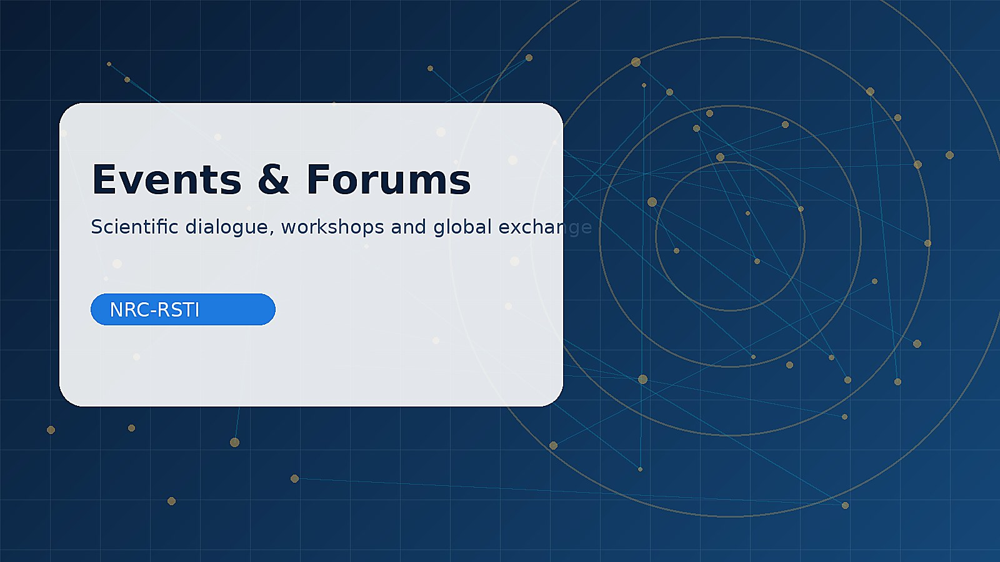

01
Na’mah Rassam Research, AI & Innovation Forum
A proposed forum for researchers, students, and institutions exploring applied research.
Recorded student research presentations, alongside proposed workshops, seminars, and forums with no announced dates.

Ideas that could become formal programs once a schedule is approved.
No dates or registration links are confirmed. These are not live event announcements.
A proposed forum for researchers, students, and institutions exploring applied research.
A proposed practical workshop on research questions, methods, writing, and publishing.
A training concept focused on Python, data analysis, and intelligent applications.
Five uploaded recordings of research presentations, available to play on this page and linked to the related paper and slide deck.
Note: these recordings feature student presenters. Appropriate permission should be obtained for public sharing of images and voices, especially for minors.
Concepts and preliminary templates are clearly labeled as illustrative. Any future completed output will be documented with verifiable titles, contributors, dates, and source or DOI links where applicable.
We welcome professional inquiries and proposals aligned with the center’s scope.